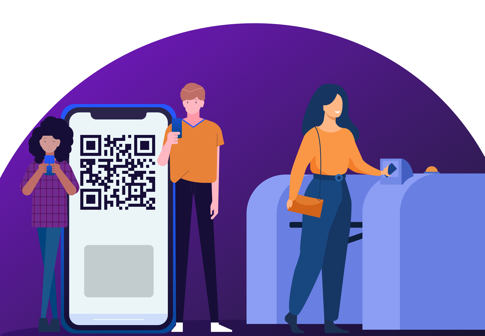
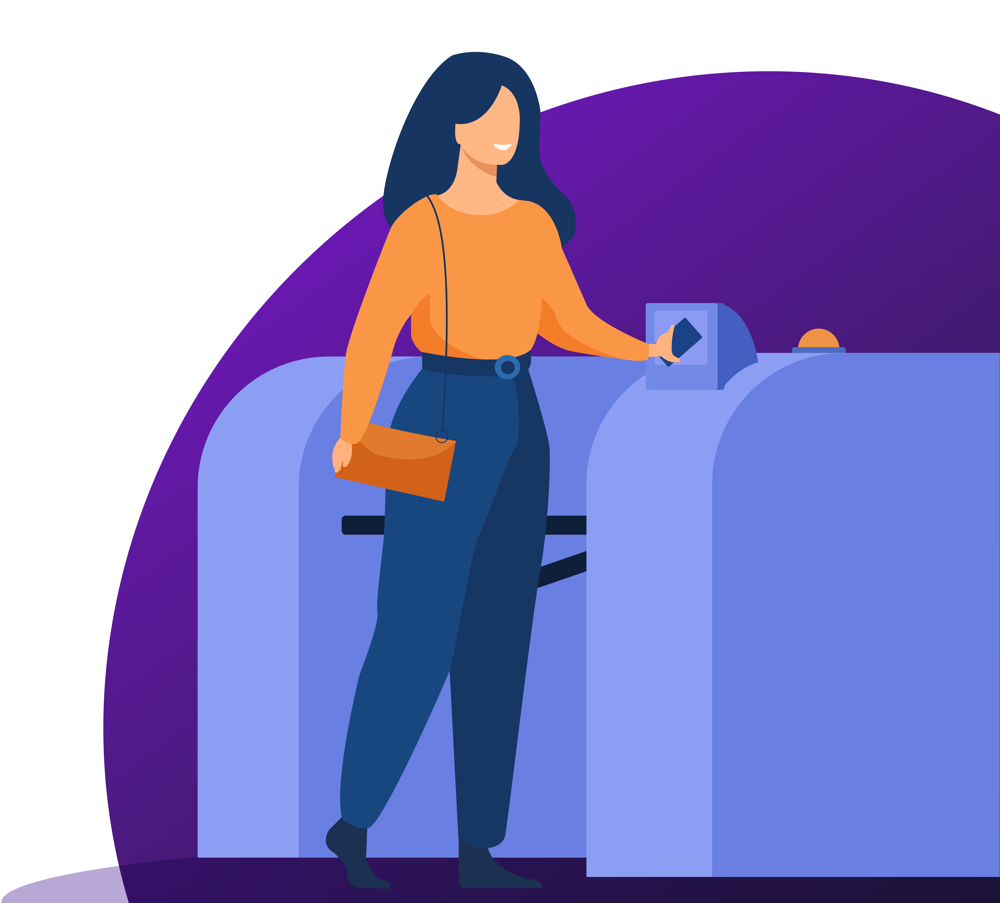

A Plataforma EA Gate é um projeto que visa, a priori, promover facilidade e comodidade aos alunos, além de maior segurança e praticidade à Instituição de Ensino. Por intermédio do Portal de Acesso, o aluno terá em mãos o QR Code para liberar sua entrada na instituição através da catraca inteligente, além de contar com informações referentes às aulas diárias, incluindo sua localização, evitando, por fim, a aglomeração de alunos na entrada e a perda de tempo ao se deslocar pela instituição.
 